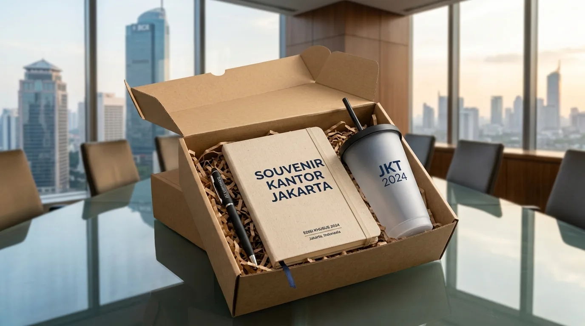

Paket Souvenir Kantor Murah Pesanan Grosir Perusahaan
 Tim Redaksi Souvenir Kantor Jakarta
20 Agustus 2026
8 Menit Baca
Tim Redaksi Souvenir Kantor Jakarta
20 Agustus 2026
8 Menit Baca

Pengadaan paket souvenir kantor murah memungkinkan perusahaan memperoleh kombinasi produk fungsional seperti tumbler, notebook, dan pulpen dengan biaya terjangkau. Pembelian dalam jumlah banyak (grosir) mengoptimalkan margin efisiensi anggaran hingga 35% dibandingkan pembelian eceran. Kustomisasi cetak logo perusahaan yang presisi menjaga aspek profesionalisme dan daya tarik promosi merek. Layanan pengadaan terpusat di Jakarta menjamin kepastian kualitas pengerjaan, ketepatan waktu produksi, serta pengiriman nasional yang aman.
Paket souvenir kantor murah adalah set merchandise ekonomis kustom terkurasi yang memadukan barang-barang fungsional untuk memenuhi kebutuhan grosir seminar, gathering, dan promosi perusahaan.
- Apa Saja Pilihan Kombinasi dalam Paket Souvenir Kantor Murah untuk Acara Perusahaan?
- Mengapa Memilih Paket Souvenir Kantor Murah dalam Pesanan Grosir Sangat Menguntungkan?
- Bagaimana Cara Mengemas Paket Souvenir Kantor Murah Agar Tetap Terlihat Elegan?
- Kesalahan Apa Saja yang Wajib Dihindari Saat Mengadakan Paket Souvenir Kantor Murah?
- Pertanyaan Umum Seputar Paket Souvenir Kantor Murah (FAQ)
- Kesimpulan Praktis
Apa Saja Pilihan Kombinasi dalam Paket Souvenir Kantor Murah untuk Acara Perusahaan?
Pilihan kombinasi paket souvenir kantor murah meliputi bundel tumbler plastik BPA-free dan pulpen gel, set notebook softcover A5 dan pouch spunbond, serta paket mug keramik custom.
Mengalokasikan anggaran untuk kebutuhan merchandise korporat berskala besar membutuhkan perhitungan yang matang. Berdasarkan Laporan Tahunan Pengadaan Merchandise Corporate Indonesia 2025/2026, permintaan paket souvenir kantor murah untuk pesanan grosir mengalami peningkatan sebesar 34% secara tahunan. Peningkatan ini didorong oleh fokus perusahaan dalam mengoptimalkan biaya operasional acara tanpa mengorbankan kehadiran merek (brand presence).
- 1 Paket Seminar Hemat
- 2 Paket Hydration Kit
- 3 Paket Meja Kerja Ekonomis
- 4 Paket Promosi Luar Ruang
- 5 Paket New Hire Starter
Paket Seminar Hemat: Kombinasi notebook softcover A5 jilid staples, pulpen gel kustom, dan tali lanyard nametag. Paket ini sangat ideal untuk acara pelatihan dan seminar dengan jumlah peserta banyak.
Paket Hydration Kit: Perpaduan tumbler minum berbahan plastik food-grade BPA-free dengan pouch canvas blacu sablon. Kombinasi ini sangat fungsional untuk kegiatan outdoor atau gathering.
Paket Meja Kerja Ekonomis: Set mug keramik sablon logo, tempat pulpen meja, dan buku catatan mini. Paket ini menjadi pilihan tepat untuk apresiasi karyawan harian.
Paket Promosi Luar Ruang: Kombinasi payung lipat ekonomis dan totebag spunbond tebal 100 GSM. Efektif untuk event promosi di luar ruangan dengan visibilitas logo tinggi.
Paket New Hire Starter: Bundel id card holder kulit sintetis, pulpen metal ekonomis, dan buku agenda kerja harian untuk menyambut karyawan baru.

Mengapa Memilih Paket Souvenir Kantor Murah dalam Pesanan Grosir Sangat Menguntungkan?
Memilih paket souvenir kantor murah dalam pesanan grosir menguntungkan karena memberikan potongan harga volume besar, menekan ongkos kirim per unit, serta menjamin keseragaman kualitas barang.
Diskon Volume
Potongan harga besar untuk pembelian banyakOngkos Kirim Efisien
Biaya per unit lebih rendahKualitas Seragam
Standar mutu yang konsistenSkala ekonomi (economy of scale) memainkan peran vital dalam pengadaan barang promosi instansi. Menurut Data Asosiasi Industri Merchandise Indonesia (AIMI) periode 2025/2026, pemesanan bundel souvenir secara grosir di atas 300 unit mampu menghemat pengeluaran anggaran hingga 30% dibandingkan membeli barang secara terpisah dari vendor yang berbeda. Penghematan ini memberikan ruang alokasi dana untuk operasional acara lainnya.
Bagi instansi yang merencanakan acara besar dan membutuhkan jaminan kualitas pengerjaan logo yang rapi, memesan melalui Souvenir Kantor Jakarta adalah keputusan yang sangat tepat untuk hasil yang efisien dan memuaskan.
Bagaimana Cara Mengemas Paket Souvenir Kantor Murah Agar Tetap Terlihat Elegan?
Cara mengemas paket souvenir kantor murah agar terlihat elegan adalah memakai box kraft ramah lingkungan, menambahkan pita kustom warna merek, dan menyertakan kartu ucapan berdesain rapi.
Box Kraft Kustom
Kemasan ramah lingkungan dengan tekstur eksklusif.
Pita Kustom
Aksen warna merek yang mempercantik tampilan.
Kartu Ucapan
Pesan apresiasi dari pimpinan perusahaan.
Meskipun komponen di dalamnya bernilai ekonomis, kemasan (packaging) luar memegang peranan hingga 40% dalam menciptakan impresi positif penerima. Pengemasan yang cermat dan rapi akan meningkatkan nilai persepsi barang secara signifikan.
- Gunakan Packaging Box Kraft Kustom: Kotak bahan kraft cokelat memberikan tekstur eksklusif, rapi, dan mencerminkan kepedulian lingkungan.
- Terapkan Kustomisasi Logo yang Proporsional: Penempatan logo perusahaan di tengah kemasan dengan teknik sablon presisi memberikan kesan profesional.
- Tambahkan Kartu Ucapan Apresiasi: Sertakan greeting card berdesain menarik yang memuat pesan dari pimpinan perusahaan kepada para peserta acara.
Untuk memperluas pilihan kombinasi merchandise acara pelatihan, simak ulasan mendalam kami mengenai paket seminar kit kantor murah yang dirancang khusus untuk kenyamanan peserta.
Kesalahan Apa Saja yang Wajib Dihindari Saat Mengadakan Paket Souvenir Kantor Murah?
Kesalahan yang wajib dihindari adalah memesan tanpa melihat sampel fisik, memilih material yang mudah rusak, serta menyetujui produksi massal tanpa mockup resmi.
Tanpa Sampel
Berisiko warna logo tidak sesuai identitas brand.
Material Murahan
Bahan berkualitas rendah cepat rusak.
Pesanan Mendadak
Produksi grosir butuh waktu QC yang cukup.
Meskipun mengutamakan harga murah, ketidakcermatan dalam memilih produk dapat berdampak buruk pada reputasi instansi:
- Mengabaikan Pengecekan Sampel: Memulai cetak massal tanpa persetujuan sampel fisik berisiko menyebabkan perbedaan warna logo instansi.
- Tergiur Harga Terlalu Rendah Tanpa QC: Mengabaikan ketebalan bahan kain atau kualitas tinta cetak demi harga termurah sering kali menghasilkan produk yang cepat rusak.
- Pemesanan Mendadak Dekat Hari H: Produksi grosir memerlukan durasi waktu yang cukup untuk proses pengeringan tinta, perakitan kemasan, dan pengawasan kualitas.
Pastikan proses pengadaan perusahaan Anda berjalan lancar tanpa hambatan teknis dengan memercayakannya kepada Souvenir Kantor Jakarta yang memberikan garansi pengerjaan rapi dan ketepatan waktu pengiriman.
Pertanyaan Umum Seputar Paket Souvenir Kantor Murah (FAQ)
Butuh Paket Souvenir Kantor Murah untuk Pesanan Grosir?
Konsultasikan kebutuhan paket souvenir kantor murah untuk pesanan grosir perusahaan Anda dengan tim kami untuk mendapatkan rekomendasi produk dan penawaran terbaik.
Konsultasi SekarangKesimpulan Praktis
Pengadaan paket souvenir kantor murah secara grosir merupakan strategi cerdas untuk memenuhi kebutuhan merchandise acara perusahaan dengan efisiensi anggaran maksimal. Melalui pemilihan kombinasi produk yang fungsional, kustomisasi logo yang presisi, serta pengemasan yang rapi dan elegan, setiap paket yang Anda bagikan akan menjadi representasi nyata dari profesionalisme instansi Anda. Segera konsultasikan kebutuhan merchandise perusahaan Anda dan pesan secara langsung di Souvenir Kantor Jakarta untuk mendapatkan penawaran harga grosir terbaik dan jaminan kualitas pengerjaan hari ini juga.